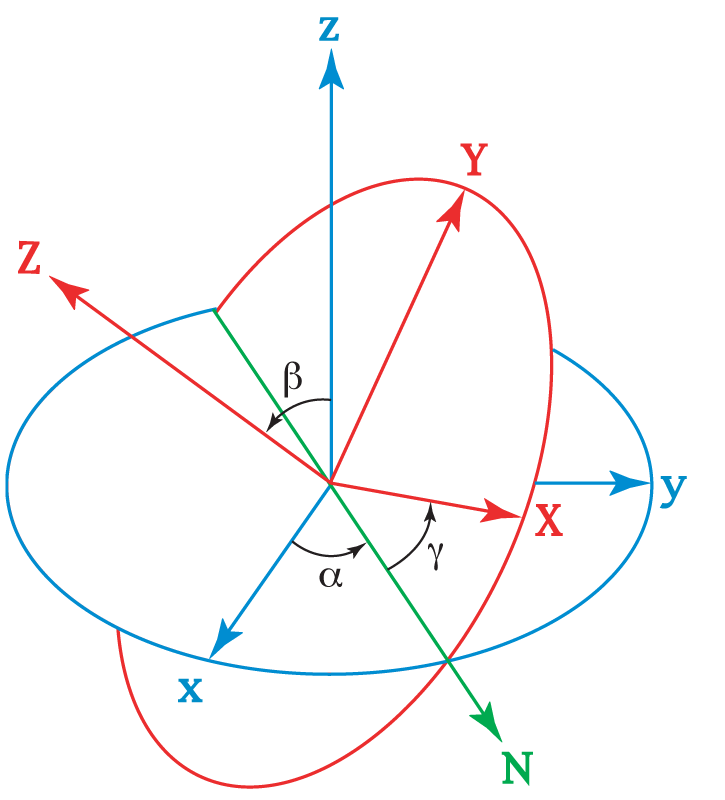

The Euler angles are three angles introduced by Leonhard Euler to describe the orientation of a rigid body with respect to a fixed coordinate system. They can also represent the orientation of a mobile frame of reference in physics or the orientation of a general basis in 3-dimensional linear algebra.

Any orientation can be achieved by composing three elemental rotations, i.e. rotations about the axes of a coordinate system. Euler angles can be defined by three of these rotations. They can also be defined by elemental geometry and the geometrical definition demonstrates that three rotations are always sufficient to reach any frame.
The three elemental rotations may be extrinsic (rotations about the axes xyz of the original coordinate system, which is assumed to remain motionless), or intrinsic (rotations about the axes of the rotating coordinate system XYZ, solidary with the moving body, which changes its orientation after each elemental rotation).
Euler angles are typically denoted as α, β, γ, or φ, θ, ψ. Different authors may use different sets of rotation axes to define Euler angles, or different names for the same angles. Therefore, any discussion employing Euler angles should always be preceded by their definition.